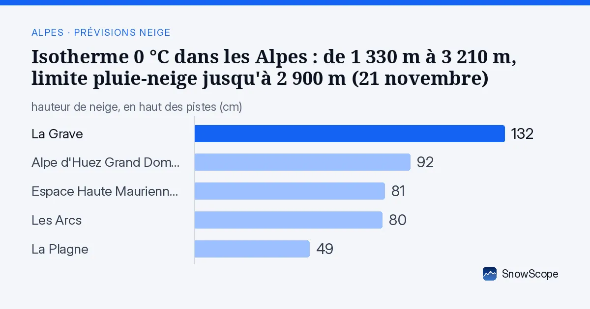

Isotherme 0 °C dans les Alpes : de 1 330 m à 3 210 m, limite pluie-neige jusqu'à 2 900 m (21 novembre)
L'isotherme 0 °C dans les Alpes, prochains jours : 1 330 m à 3 210 m. Heures les plus douces : limite pluie-neige environ 300 m plus bas, jusqu'à 2 900 m à La Grave le dimanche 22 novembre. La limite pluie-neige est la prévision d'une prévision : elle suit l'isotherme, qui peut bouger de centaines de mètres.
Consultez les prévisions neige en temps réel pour La Grave sur l'application SnowScopeHauteurs de neige, alertes poudreuse et carte 3D, gratuitement.
L'isotherme 0 °C, au quotidien
L'isotherme 0 °C au-dessus des stations ci-dessous, de l'heure la plus froide à la plus douce de chaque jour : samedi 21 novembre : de 2 000 m à 2 990 m. dimanche 22 novembre : de 1 860 m à 3 210 m. lundi 23 novembre : de 1 340 m à 3 210 m. mardi 24 novembre : de 1 330 m à 2 480 m.
| Station | Hauteur de neige | Neige fraîche, 72 h | Attendu, jours suivants | Sommet |
|---|---|---|---|---|
| La Grave | 132 cm | 92 cm | 90 cm | 3 543 m |
| Alpe d'Huez Grand Domaine | 92 cm | 84 cm | 89 cm | 3 306 m |
| Les Arcs | 80 cm | 102 cm | 74 cm | 3 205 m |
| La Plagne | 49 cm | 91 cm | 73 cm | 3 058 m |
| Espace Haute Maurienne Vanoise | 81 cm | 62 cm | 47 cm | 2 948 m |

Limite pluie-neige par station
La Grave (bas 3 196 m, sommet 3 543 m) : limite pluie-neige vers 2 900 m le 22 novembre, sous le bas. De la neige partout.
Alpe d'Huez Grand Domaine, bas 1 124 m, sommet 3 306 m : limite pluie-neige vers 2 500 m le 21 novembre, qui coupe la station : neige en haut, mouillé plus bas.
Les Arcs (bas 1 222 m, sommet 3 205 m) : limite pluie-neige vers 2 400 m le 21 novembre, à mi-pente. Neige au-dessus, pluie ou neige mouillée en dessous.
La Plagne, bas 1 217 m, sommet 3 058 m : limite pluie-neige vers 2 400 m le 21 novembre, qui coupe la station : neige en haut, mouillé plus bas.
Espace Haute Maurienne Vanoise (bas 1 306 m, sommet 2 948 m) : limite pluie-neige vers 2 400 m le 21 novembre, à mi-pente. Neige au-dessus, pluie ou neige mouillée en dessous.
Risque de pluie sur neige
Alpe d'Huez Grand Domaine : environ 92 cm en haut du domaine, limite pluie-neige au-dessus de mi-pente le 22 novembre. Pluie sur neige : lourde et mouillée d'abord, glacée après le regel.
Signal de risque à Les Arcs : environ 80 cm en altitude et une limite pluie-neige au-dessus de mi-pente le 22 novembre ; la pluie rendrait la neige mouillée, puis glacée.
La Plagne : environ 49 cm en haut du domaine, limite pluie-neige au-dessus de mi-pente le 22 novembre. Pluie sur neige : lourde et mouillée d'abord, glacée après le regel.
La prévision donne à Andermatt (2 963 m) 64 mm de précipitations, avec la limite pluie-neige vers 1 170 m pendant les heures humides.
Lugano (300 m) : 44 mm prévus, limite pluie-neige vers 950 m pendant ce temps.
L'isotherme 0 °C et la limite pluie-neige, en bref
L'air se refroidit avec l'altitude, en règle générale. Sous l'isotherme 0 °C les flocons commencent à fondre ; la fonte est lente, donc la pluie ne commence qu'environ 300 m plus bas. C'est la limite pluie-neige. Un air sec refroidit la neige par évaporation et pousse la limite encore plus bas.
Conseils aux skieurs
- L'air doux ramollit la neige dès midi, alors skiez tôt, en haut et sur les pentes nord.
- L'isotherme 0 °C est une prévision et peut bouger de plusieurs centaines de mètres, ce qui change l'endroit où la pluie devient neige : revoyez la carte la veille.
- Avant toute sortie hors-piste ou en randonnée, lisez le bulletin d'avalanche officiel (liens ci-dessous).
- De la neige sur la carte ne veut pas dire que la station est ouverte : vérifiez remontées et dates sur son site.
À propos de ces chiffres
Les hauteurs de neige des stations sont la neige la plus épaisse sur le haut du domaine à la date indiquée ; ce sont des estimations pour une zone, pas une mesure en un point. Les prévisions peuvent changer. Consultez toujours le bulletin d'avalanche officiel avant le hors-piste.
Bulletins d'avalanche officiels: EAWS (Alps)
Citer ce bulletin
Pour la recherche, l'enseignement ou la presse : chiffres et graphiques réutilisables librement sous CC BY 4.0 avec cette citation.
SnowScope (2026), Isotherme 0 °C dans les Alpes : de 1 330 m à 3 210 m, limite pluie-neige jusqu'à 2 900 m (21 novembre), https://snowscope.app/blog/fr/2026/11/alps-freezing-level-snow-line-21-november-2026.html, consulté le 2026-11-21
SnowScope (Atlas Labs). (2026, November 21). Isotherme 0 °C dans les Alpes : de 1 330 m à 3 210 m, limite pluie-neige jusqu'à 2 900 m (21 novembre). SnowScope snow reports. https://snowscope.app/blog/fr/2026/11/alps-freezing-level-snow-line-21-november-2026.html
BibTeX
@misc{snowscope2026alpsfreezinglevelsnowlin,
author = {{SnowScope (Atlas Labs)}},
title = {Isotherme 0 °C dans les Alpes : de 1 330 m à 3 210 m, limite pluie-neige jusqu'à 2 900 m (21 novembre)},
year = {2026},
month = nov,
howpublished = {\url{https://snowscope.app/blog/fr/2026/11/alps-freezing-level-snow-line-21-november-2026.html}},
note = {Published 2026-11-21 12:33 UTC; accessed 2026-11-21}
}· CC BY 4.0 · Méthodes, données et outils →
La Grave : neige et température selon l'altitude, cet hiver vs l'hiver dernier (outils) →
Suivre La Grave
Gratuit : un message quand la neige arrive, et la météo chaque matin.